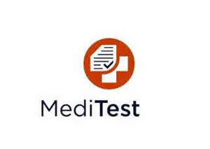

Trade Mark Journal No.2025/028 11 July 2025
UK00004227430 1 July 2025 (9,16,35,41)

- Class 9
- Educational and teaching apparatus and instruments; downloadable educational course materials; educational computer software; educational computer software applications; educational mobile applications; electronic publications; downloadable electronic publications; downloadable electronic award certificates; electronic examination papers; electronic databases recorded on computer media; audio-visual educational materials; downloadable podcasts; all the aforesaid goods relating to the field of education.
- Class 16
- Printed instructional, educational, and teaching materials; printed publications; textbooks; manuals; study guides; printed award certificates; printed examination papers; all the aforesaid goods relating to the field of education.
- Class 35
- Providing administration services of international admission programs in the fields of education for human medicine, dentistry and veterinary medicine; providing administration services of educational exchange programs in the fields of education for human medicine, dentistry and veterinary medicine.
- Class 41
- Educational services; provision of instructional, training, teaching, testing, examination and assessment services; publication in both electronic and paper format of instructional, training, teaching, testing, examination and assessment materials, including examination papers and syllabuses and materials for the testing of knowledge; testing of abilities and knowledge necessary to the study of human medicine, dentistry and veterinary medicine; information, advisory and consultancy services relating to all the aforesaid services, including such services provided online from computer databases, intranets, extranets or the internet; provision of educational examination facilities. .
MediTest Foundation co/ DeutStift GmbH
Representative: Hindles Limited